| 드라키 토템 - 빨강 | 빨간 드라키 토템 ■ 3가지 색을 겹치면 …？ ※ 몬조라섬 습지대의 남서쪽 동굴에서 습득 |
목재 10 토마토 10 |
텅 빈 섬 작업대 | |
| 애벌레 소파 - 머리 | 애벌레 모양 쿠션의 머리 부분 ■ 앉을 수 있는 가구 ※ 문부르크섬의 론달키아의 성 앞의 나무 밑에서 습득 |
풀 실 2 솜 5 모피 5 | 텅 빈 섬 작업대 | |
| 애벌레 소파 - 몸통 | 애벌레 모양 쿠션의 몸통 부분 ■ 앉을 수 있는 가구 ※ 문부르크섬의 애벌레 소파 머리 습득 부분의 동쪽 |
풀 실 2 솜 5 모피 5 | 텅 빈 섬 작업대 | |
| 애벌레 소파 - 꼬리 | 애벌레 모양 쿠션의 꼬리 부분 ■ 앉을 수 있는 가구 ※ 문부르크섬의 애벌레 소파 머리 습득 부분의 서쪽 |
풀 실 2 솜 5 모피 5 | 텅 빈 섬 작업대 | |
| 거대 나무망치 인형 | 큐트한 거대 나무망치 봉제 인형 | 풀 실 15 솜 20 |
텅 빈 섬 작업대 | |
| 알미라지 인형 | 알미라지 모양의 귀여운 인형 ※ 문부르크섬 큰 등대 트램폴린 근처의 방에서 습득 |
풀 실 2 솜 15 |
텅 빈 섬 작업대 | |
| 슬라임 램프 | 슬라임 모양의 귀여운 램프 ※ 빌더 하트 50 교환 (잠금 해제) |
미스릴 1 금괴 1 기름 1 |
텅 빈 섬 작업대 | |
| 킹 슬라임 램프 | 킹 슬라임 모양의 귀여운 램프 ※ 빌더 하트 100 교환 (잠금 해제) |
미스릴 3 금괴 3 기름 1 |
텅 빈 섬 작업대 | |
| 호미론 조각상 | 어떤 세계에 안내 담당인 호이미 슬라임의 조각상 ※ 텅 빈 섬에 마물을 데려오자 10 (잠금 해제) |
석재 5 동괴 1 미스릴 1 |
텅 빈 섬 작업대 | |
| 슬라임 풍선 | 슬라임 모양의 둥실둥실 떠오르는 것 ※ 빌더 하트 20 교환 (잠금 해제) |
목재 1 실 1 야광초 3 | 텅 빈 섬 작업대 | |
| 길막이 쥐 | 길을 막고 있는 거대 쥐 인형 ■ 원하는 문장을 쓸 수 있다 ※ 몬조라섬 지바코 방향 부서진 풍차 뒤쪽 동굴안 |
목재 15 | 텅 빈 섬 작업대 | |
| 계관 분수 | 계관뱀 모양의 분수 ■ 물속에 두고 사용 ※ 오카무르섬 상층 지하 호수 |
석재 6 녹암 5 철괴 10 |
텅 빈 섬 작업대 | |
| 움직이지 않는 석상 | 움직이는 석상 모양의 움직이지 않는 석상 ※ 꽁꽁섬에서 움직이는 석상이 드롭 |
마물에서 드롭 | ／ | |
| 예티 러그 | 예티 모양의 깔개 ※ 빌더 하트 20 교환 (잠금 해제) |
모피 3 실 1 |
텅 빈 섬 작업대 | |
| 두근두근 침대 | 폭탄바위 모양의 푹신푹신한 침대 ■ 잠 잘 수 있는 가구 ※ 오카무르섬 상층 숨겨진 통로 |
풀 실 4 솜 2 |
텅 빈 섬 작업대 | |
| 슬라임 눈 | 슬라임 눈 모양의 장식 ※ 빌더 하트 50 교환 (잠금 해제) |
하얀 바위 2 석탄 1 |
텅 빈 섬 작업대 | |
| 슬라임 입 | 슬라임 입 모양의 장식 ※ 빌더 하트 50 교환 (잠금 해제) |
흙 2 석탄 1 |
텅 빈 섬 작업대 | |
| 킬러 팬서 조각상 | 킬러 팬서를 본뜬 조각상 ※ 질퍽질퍽섬에서 킬러 팬서가 드롭 |
마물에서 드롭 | ／ | |
| 사신의 기사의 조각상 | 사신의 기사의를 본뜬 조각상 ※ 번쩍번쩍섬에서 사신의 기사가 드롭 |
마물에서 드롭 | ／ | |
| 튀어나오는 고스트 | 고스트를 본뜬 조각상 ※ 주렁주렁섬에서 고스트(대)가 드롭 |
마물에서 드롭 | ／ | |
| 외토메탈 수프 장식 | 외톨이 메탈을 본뜬 조각상 ※ 출렁출렁섬에서 외톨이 메탈이 드롭 |
마물에서 드롭 | ／ | |
| 머맨 조각상 | 머맨을 본뜬 조각상 ※ 첨벙첨벙섬에서 머맨이 드롭 |
마물에서 드롭 | ／ | |
| 메탈 킹의 왕관 | 메탈 킹의 왕관을 본뜬 조각상 ※ 어둑어둑섬에서 메탈 킹이 드롭 |
마물에서 드롭 | ／ | |
| 미스터리 돌 조각상 | 미스터리 돌를 본뜬 조각상 ※ 으스스섬에서 미스터리 돌이 드롭 |
마물에서 드롭 | ／ | |
| 춤추는 보석 조각상 | 춤추는 보석을 본뜬 조각상 ※ 뒹굴뒹굴섬에서 춤추는 보석이 드롭 |
마물에서 드롭 | ／ | |
| 버서커 조각상 | 버서커를 본뜬 조각상 ※ 꽁꽁섬에서 버서커(대)가 드롭 |
마물에서 드롭 | ／ | |
| 골든 헤드 | 금과 다이아몬드로 재현한 골드맨의 머리 | 금 벽돌벽 10 다이아몬드 2 |
텅 빈 섬 작업대 | |
| 힘의 오브 | 바람의 힘이 담긴 미나데인포의 부품 | 문부르크 스토리진행 |
／ | |
| 마력의 오브 | 물의 힘이 담긴 미나데인포의 부품 | 문부르크 스토리진행 |
／ | |
| 용기의 오브 | 모두의 용기의 힘이 담긴 미나데인포의 부품 | 문부르크 스토리진행 |
／ | |
| 로토의 화톳불 | 전설의 용사가 밝혔다고 하는 화톳불 | 마법의 보온돌 1 금괴 4 기름 3 |
／ | |
| ○○○○ 깃발 | 세계를 평화롭게 만든 빌더의 왕국에 내걸 깃발 ※ ○○○○는 플레이어의 이름이 들어간다 |
텅 빈 섬 스토리진행 | ／ | |
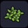 |
작은 풀 | 지면에 나 잇는 매우 작은 풀 | 출렁출렁섬 등 | ／ |
| 비단풀 | 튼튼한 섬유질의 풀 | 출렁출렁섬 등 | ／ | |
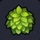 |
약잎 덤불 | 뿌리까지 뽑아낸 약용 잎 | 출렁출렁섬 등 | ／ |
| 꽃피는 덤불 | 비옥한 환경에서 꽃을 피운 약용 잎 참조: 만드라풀 |
약잎 씨앗을 심으면 일정 확률로 자람 | ／ | |
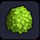 |
큰 덤불 | 크게 우거진 풀덤불 | 출렁출렁섬 - 호수에 있는 섬 | ／ |
| 목초 | 가축이 좋아하는 초원의 풀 | 주렁주렁섬 | ／ | |
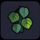 |
담쟁이덩굴 | 당겨도 잘 끊어지지 않는 담쟁이덩굴 ■ 벽에 걸면 1단 위로 올라갈 수 있다 |
뒹굴뒹굴섬 등 | ／ |
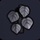 |
어둠의 담쟁이덩굴 | 그림자처럼 새까만 담쟁이덩굴 ■ 벽에 걸면 1단 위로 올라갈 수 있다 |
어둑어둑섬 | ／ |
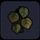 |
시든 담쟁이덩굴 | 시들어 버린 담쟁이덩굴 ■ 벽에 걸면 1단 위로 올라갈 수 있다 |
질퍽질퍽섬 | ／ |
| 우거진 잎 | 나뭇잎이 우거진 작은 나뭇가지 ※ 빌더 하트 10 교환 (잠금 해제) |
출렁출렁섬 | 그루터기 작업대 | |
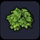 |
무성하게 우거진 잎 | 나뭇잎이 우거진 나뭇가지 ※ 빌더 하트 10 교환 (잠금 해제) |
출렁출렁섬 | 그루터기 작업대 |
| 하얀 꽃 | 망가지지 않게 꺾은 하얀 꽃 | 주렁주렁섬 | ／ | |
| 검은 꽃 | 망가지지 않게 꺾은 검은 꽃 | 출렁출렁섬 | ／ | |
| 보라 꽃 | 망가지지 않게 꺾은 보라 꽃 | 출렁출렁섬 | ／ | |
| 분홍 꽃 | 망가지지 않게 꺾은 분홍 꽃 | 주렁주렁섬 | ／ | |
| 빨간 꽃 | 망가지지 않게 꺾은 빨간 꽃 | 꽁꽁섬 | ／ | |
| 초록 꽃 | 망가지지 않게 꺾은 초록 꽃 | 주렁주렁섬 | ／ | |
| 노란 꽃 | 망가지지 않게 꺾은 노란 꽃 | 주렁주렁섬 | ／ | |
| 파란 꽃 | 망가지지 않게 꺾은 파란 꽃 | 주렁주렁섬 | ／ | |
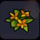 |
마비 꽃 | 꽃잎에 마비 성분이 함유된 주황색 꽃 ■ 꽃 위를 걸으면 마비 상태가 된다 |
어둑어둑섬 | ／ |
| 하얀 꽃 | 망가지지 않게 꺾은 하얀 꽃(나비) | 주렁주렁섬 | ／ | |
| 나뭇가지 | 마른 식물의 가지 | 주렁주렁섬 | ／ | |
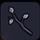 |
어둠의 나뭇가지 | 밤처럼 새까만 나뭇가지 | 어둑어둑섬 | ／ |
| 시든 나무 | 세월이 지나 말라 버진 거목 | 어둑어둑섬 | ／ | |
| 늪의 마른 나무 | 영양 부족으로 메말라 버린 나무 | 어둑어둑섬 | ／ | |
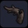 |
쓰러진 거목 | 영양 부족으로 휘어진 굵은 나무 | 어둑어둑섬 | ／ |
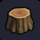 |
참나무 그루터기 | 베어 넘어진 참나무의 그루터기 | 참나무 주변 참나무 윗부분을 베어낸 후 입수 |
／ |
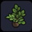 |
참나무 모종 | 참나무의 모종 ■ 심으면 참나무 묘목이 자란다 |
참나무 주변에 도토리를 심고
자랄때 모종상태로 회수 ※ 도토리를 심을때 주변 나무종류에 영향을 받음 |
／ |
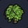 |
어린 참나무 | 널찍한 잎을 지닌 참나무의 묘목 | 참나무 주변에 도토리를 심고 자랄때 어린나무 상태로 회수 | ／ |
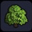 |
참나무 | 근사하게 성장한 참나무 | 주렁주렁섬, 질퍽질퍽섬 텅 빈 섬 초록색 개척지 |
／ |
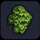 |
큰 참나무 | 오랜 세월을 거쳐 크게 성장한 참나무 | 주렁주렁섬, 질퍽질퍽섬 텅 빈 섬 초록색 개척지 |
／ |
| 야자나무 그루터기 | 베어 넘어진 야자나무의 그루터기 | 야자나무의 주변 야자나무의 윗부분을 베어낸 후 입수 |
／ | |
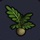 |
야자나무 모종 | 야자나무의 모종 ■ 심으면 야자나무 묘목이 자란다 |
야자나무 주변에 도토리를 심고 자랄때 모종상태로 회수 ※ 도토리를 심을때 주변 나무종류에 영향을 받음 |
／ |
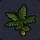 |
어린 야자나무 | 따뜻한 지역에 자라는 야자나무의 묘목 | 야자나무 주변에 도토리를 심고 자랄때 어린나무 상태로 회수 | ／ |
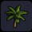 |
야자나무 | 근사하게 성장한 야자나무 | 뒹굴뒹굴섬 텅 빈 섬 빨간색 개척지 |
／ |
| 큰 야자나무 | 오랜 세월을 거쳐 크게 성장한 야자나무 | 뒹굴뒹굴섬 텅 빈 섬 빨간색 개척지 |
／ | |
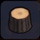 |
삼나무 그루터기 | 베어 넘어진 삼나무 그루터기 | 삼나무의 주변 삼나무의 윗부분을 베어낸 후 입수 |
／ |
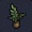 |
삼나무 모종 | 삼나무의 모종 ■ 심으면 삼나무 묘목이 자란다 |
삼나무 주변에 도토리를 심고
자랄때 모종상태로 회수 ※ 도토리를 심을때 주변 나무종류에 영향을 받음 |
／ |
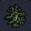 |
어린 삼나무 | 항상 가는 잎을 달고 있는 삼나무의 묘목 | 삼나무 주변에 도토리를 심고 자랄때 어린나무 상태로 회수 | ／ |
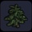 |
삼나무 | 근사하게 성장한 삼나무 | 텅 빈 섬 파란색 개척지 | ／ |
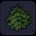 |
큰 삼나무 | 오랜 세월을 거쳐 크게 성장한 삼나무 | 텅 빈 섬 파란색 개척지 | ／ |
| 눈 덮인 삼나무 | 눈 덮인 삼나무 | 출렁출렁섬, 꽁꽁섬 주변에 도도리를 심으면 삼나무로 자람 |
／ | |
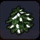 |
눈 덮인 거대 삼나무 | 오랜 세월을 거쳐 크게 성장한 눈 덮인 삼나무 | 출렁출렁섬, 꽁꽁섬 주변에 도도리를 심으면 삼나무로 자람 |
／ |
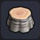 |
자작나무 그루터기 | 베어 넘어진 자작나무의 그루터기 | 자작나무 주변 자작나무의 윗부분을 베어낸 후 입수 |
／ |
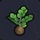 |
자작나무 모종 | 자작나무 나무 모종 ■ 심으면 자작나무 묘목이 자란다 |
자작나무 주변에 도토리를 심고
자랄때 모종상태로 회수 ※ 도토리를 심을때 주변 나무종류에 영향을 받음 |
／ |
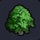 |
어린 자작나무 | 푸른 잎을 지닌 어린 자작나무 | 자작나무 주변에 도토리를 심고 자랄때 어린나무 상태로 회수 | ／ |
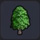 |
자작나무 | 추운 지방에서 자라는 줄기가 하얀 나무 | 출렁출렁섬 | ／ |
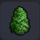 |
큰 자작나무 | 오랜 세월을 거쳐 크게 성장한 자작나무 | 출렁출렁섬 | ／ |
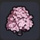 |
벚나무 | 옅은 분홍빛 꽃을 피우는 아름다운 나무 | 주렁주렁섬 |
／ |
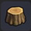 |
시든 그루터기 | 시들어 버린 참나무의 그루터기 | 질퍽질퍽섬 시든 나무의 상단을 베어 내고 |
／ |
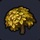 |
시든 어린나무 | 시들어 버린 참나무 | 도토리를 심는다(고급) 몬조라섬에서도 입수가능 질퍽질퍽섬 시든 나무들 주변 |
／ |
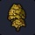 |
시든 큰 나무 | 시들어 버린 큰 참나무 | 질퍽질퍽섬 | ／ |
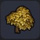 |
시든 나무 | 시들어 버린 참나무 | 질퍽질퍽섬 | ／ |
| 우산이끼 | 습한 곳에서 자라는 잎이 갈라진 우산이끼 | 질퍽질퍽섬 | ／ | |
| 연꽃 | 수면에 핀 하얀 꽃 | 주렁주렁섬 | ／ | |
| 연꽃잎 | 수면에 떠 있는 작은 연꽃 | 주렁주렁섬 | ／ | |
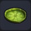 |
큰 연꽃잎 | 물가에 뜨는 커다란 잎을 지닌 식물 | 주렁주렁섬 | ／ |
| 가시나무 | 가시가 돋힌 식물의 큰 줄기 ■ 만지면 대미지를 입는다 |
질퍽질퍽섬 | ／ |